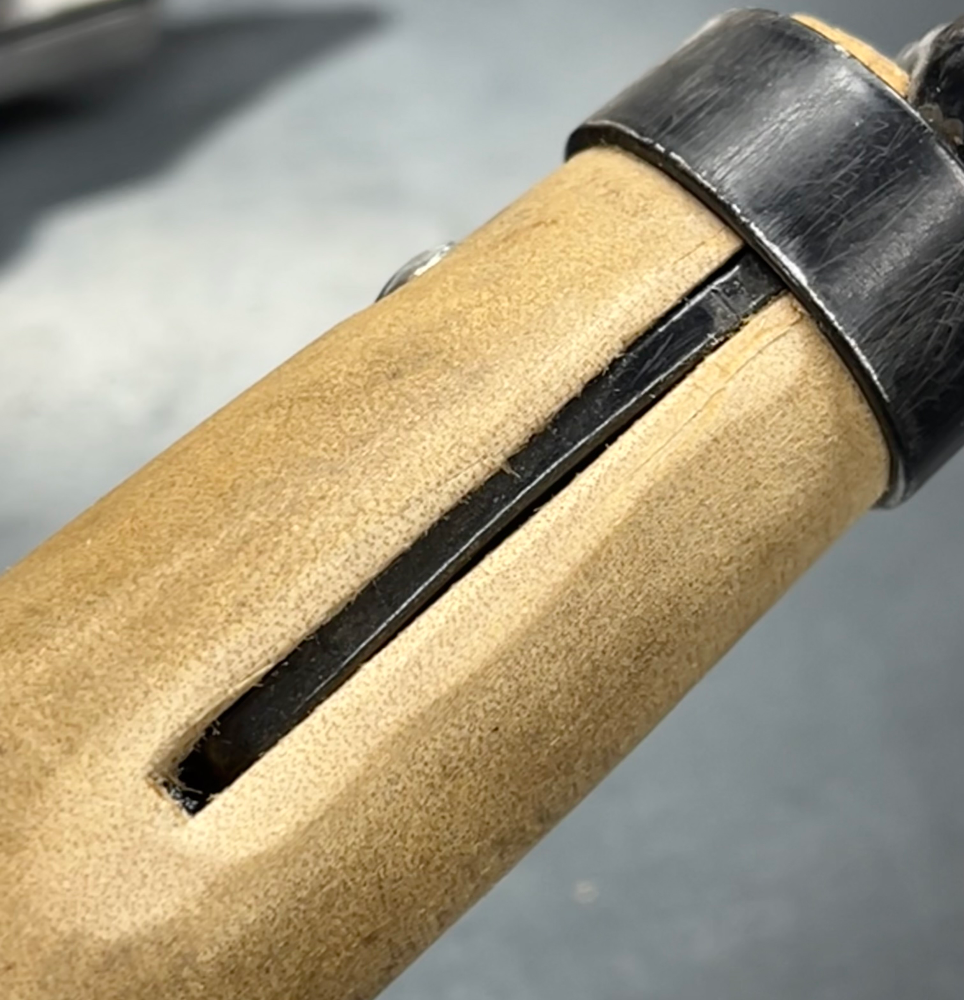

Take Care of the Handle Too
If the tool’s handle is wooden, show it a little love periodically.
- Clean the handle and sand any rough spots. 220 grit sandpaper is excellent for this.
- Coat the wood with a light coat of finish. A natural oil mixed with beeswax is the best option to protect the wood and to provide that a feel.
If opting for a finish containing linseed oil, Tried & True’s Original Wood Polish is a great option. They do not use heavy metals added to aid in drying.
- Once the oil has dried, burnish the surface. A green or purple scrub pad works well.
Modify the Tool to Fit You
Unless your tool is a museum or collector’s piece, it can be modified. Further, it should be made so that it becomes an extension of you, and makes use of it easier for you. Here are some recommendations worth considering:
- Paint the handle. Those wooden scales on my hori hori knife are pretty, but they also make the tool easier to lose in the garden. I spray painted the handle high visibility yellow paint, and my tool is now easy to find. The pictures to the right are not great, but you should be able to get the idea.
- Cut the shaft down. I have a rake which had a handle that was so long that it would not hang well in my tool shed. By cutting off 3” of the end, it hangs perfectly.
- Sand down any rough transitions. The hori hori knife shown above and to the right was made easier to handle by rounding off the transitions from the sides to the edges.
The hand rake shown to the right is not new; I had been using it for 5 years when this picture was taken. And I can attest that it was not as nice as shown when it was purchased. Instead, the cut made into the wood to hold the metal tines was quite rough as shown in the two left-most pictures below.
The slit cut into the wooden handle was sanded using a Foredom rotary tool (a Dremel would also work), holding an 80 grit flap wheel sanding paper.
Then, the whole handle was finished with Tried & True’s Original Wood Polish.
Please note: this tool does not get used as much as the hori hori knife, so painting the handle a bright colour is not as necessary.
You can click on any of the pictures to see a larger version.

|

|

|

|
|
Slit cut in the handle at the factory for the rake head
|
Worst case for the slit opening
|
After sanding the edges of the opening
|
Finished with Tried & True’s Original Wood Polish
|
Replacing the Handle: Wood or Composite?
Wooden handles feel great and are easy to modify to fit your needs. This is the recommendation for almost all cases.
Unfortunately, I have seen that replacement handles are oftentimes as expensive as a new tool, especially for shovels. In these cases, you may just replace the tool instead of the handle.
Make Your Own Tool Handles
If you are a woodturner, you can easily make your own wooden handles. Rick Rich wrote a great article, “Spruce up Gardening Tools” in the American Association of Woodturner's Woodturning Fundamentals magazine.
Replacing a Gardening Tool
Wooden handles are the top choice if you take care of your tools. However, if a non-gardener in your family is prone to leave the tools outside in the weather after using them, this may not be the best choice.
Also, if the tool is used for prying (e.g., a shovel), then a fiberglass handle may be preferred.


{kind=link}
{kind=link}
{kind=link}
{kind=link}